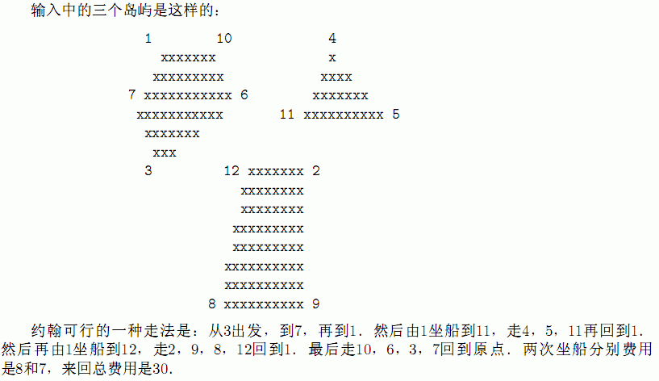

第1行输入N(3≤N≤500)，表示所有岛屿多边形的个数．
接下来N行每行输入两个整数V1和V2(1≤V1≤N;1≤V2≤N)，表示一条构成岛屿的线段的两个端点．接下来输入N行N列的矩阵，表示两个顶点间航行所需费用．
12
1 7
7 3
3 6
6 10
10 1
2 12
2 9
8 9
8 12
11 5
5 4
11 4
0 15 9 20 25 8 10 13 17 8 8 7
15 0 12 12 10 10 8 15 15 8 8 9
9 12 0 25 20 18 16 14 13 7 12 12
20 12 25 0 8 13 14 15 15 10 10 10
25 10 20 8 0 16 20 18 17 18 9 11
8 10 18 13 16 0 10 9 11 10 8 12
10 8 16 14 20 10 0 18 20 6 16 15
13 15 14 15 18 9 18 0 5 12 12 13
17 15 13 15 17 11 20 5 0 22 8 10
8 8 7 10 18 10 6 12 22 0 11 12
8 8 12 10 9 8 16 12 8 11 0 9
7 9 12 10 11 12 15 13 10 12 9 0
30